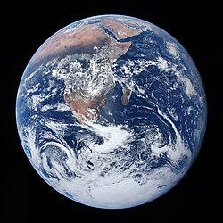

(點擊影像開啟 Google Earth 實境)
🌍 基本概覽
| 類型 | 類地行星 (岩石行星) |
|---|---|
| 平均直徑 | 約 12,742 km |
| 繞行座標 | 繞行太陽 (距離 1 AU) / 隨太陽系繞行銀河中心 |
| 誕生時間 | 約 45.4 億年前 |
| 自轉週期 | 23小時 56分 4秒 (恆星日) |
| 衛星 | 1 個 (月球) |
| 表面組成 | 71% 海洋、29% 陸地 |
🔍 關於 地球 (Earth)
地球是太陽系中唯一已知擁有生命的星球。它位於太陽系的適居帶內， 液態水的存在與適當的大氣厚度，為生物提供了完美的生存條件。
我們不僅以每秒約 30 公里的速度繞著太陽公轉，整個太陽系更以每秒約 220 公里的速度繞著銀河系中心旋轉。 這意味著地球繞完銀河系一圈（稱為一個銀河年）大約需要 2.25 億至 2.5 億年。